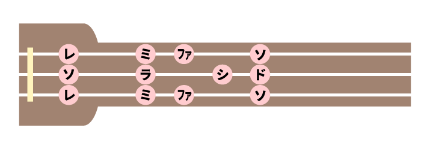

どうも、いつなです。
ホームページを公開してから約半年間、一切の更新が無く……申し訳ありませんでした！！！orz
超会議やらなにやらで忙しく、動画を作るので精一杯な日々を送っていましたが、少し余裕が出てきたのでこれからはブログ記事の執筆もぼちぼち進めて行きたいと思います。
また半年空くとかは無いようにしたいですね……
さて、本題に移ります。
三線でボカロ曲を耳コピしていると悩まされることは「転調」ですよね。
三線は転調に弱い楽器であるにもかかわらず、最近の曲は転調が非常に多いので、耳コピをしていて頭を抱えてしまいます。
三線の楽譜「工工四」は、合がド、乙がレ、老がミ……と、それぞれの音が(相対的な)ドレミに対応しています。そして、調弦を変えることで、カラオケでキーを上げ下げするがごとく、演奏するキーが変わります。
しかし、それだけでは最近の転調しまくる曲には対応できません。また、転調しない曲であっても、「合を移動ド」と考えていると音域が足りなくなる場合があります。
そこで、本来の工工四で記されている勘所以外の場所も使った音階を用いることで、なんとかして色々なキーに対応してやろう！！というのが今回の記事の内容です。難易度別にそれぞれのキーの勘所を示し、運指の一例として動画も乗せてあります。三線で転調が多い曲を弾く際や、耳コピをする際などに参考にしていただけたら嬉しいです。
※本来、三線の左手の運指では薬指を使いませんが、この記事では薬指を使う運指がたくさん出てきます。この運指はあくまでも私がボカロ曲などを弾く際に個人的に使っているもので、三線で本来演奏する沖縄の民謡や古典などでは使わないものとなっています。ご注意ください。
※以降、調弦はCFCの場合で解説します。画像内のドレミは全て移動ドの表記となっています。
難易度★
基本の三線の音階で演奏できるキーです。
Cメジャー/Aマイナー
Fメジャー/Dマイナー
難易度★★
上や乙などに#がつくキーです。慣れれば比較的簡単に弾けるので、1曲を通してこの音階で演奏することもあります。
D#メジャー/Cマイナー
A#メジャー/Gマイナー
G#メジャー/Fマイナー
難易度★★★
指の動きがかなり複雑になってきます。1曲を通してこの音階を使うことは難しいですが、部分的な転調がある曲でこの音階を覚えておくと便利です。
C#メジャー/A#マイナー
Gメジャー/Eマイナー
Dメジャー/Bマイナー
難易度★★★★
指を大きく動かす必要がある音階なので、できれば使いたくありませんが、これらを使えるようになっておくことでほぼすべての転調に対応することができます。
F#メジャー/D#マイナー
Eメジャー/C#マイナー
Bメジャー/G#マイナー

Aメジャー/F#マイナー
以上が全てのキーの音階です。これと調弦を組み合わせることで、転調してもなんとか耐えられるようになるわけです。
たとえば、
オーバーライドは前奏～ABメロまではE、サビからF#に転調していきます。
(すべてメジャースケールで話をします、ﾏｲﾅｰﾜｶﾗﾅｲ)
調弦CFCのままだとEもF#も演奏しづらい(のに加えて下の音域が足りない)ので、調弦をG#C#G#にします。すると前半がG#、後半がA#と、難易度★2の音階のみで全て演奏することができます。
とはいえ、オーバーライドは運指が良くなってもテンポが速すぎて難易度が尋常じゃないのですが……笑
このように、色々な音階を覚えておくことで、色んな音域/キーの曲に対応できるようになります。
いかがでしたか？
耳コピを何度もやっていると、今回のキーの話を意識せずとも、自分の演奏しやすいようになんとなく調弦を合わせることができるようになってくると思います。
というか、実は私はどちらかというと感覚派の人間で、私もここまで書いてきたこと全てをちゃんと覚えているわけではありません。そのため、どうしても演奏しやすい調弦が見つからずに困った状態になった時だけ「この曲のキーはこれで音域はこれだから……」と、今回解説したことを意識して調弦を決めています。
この記事が少しでも皆さんの三線ライフの役に立てば幸いです！
それでは、また。